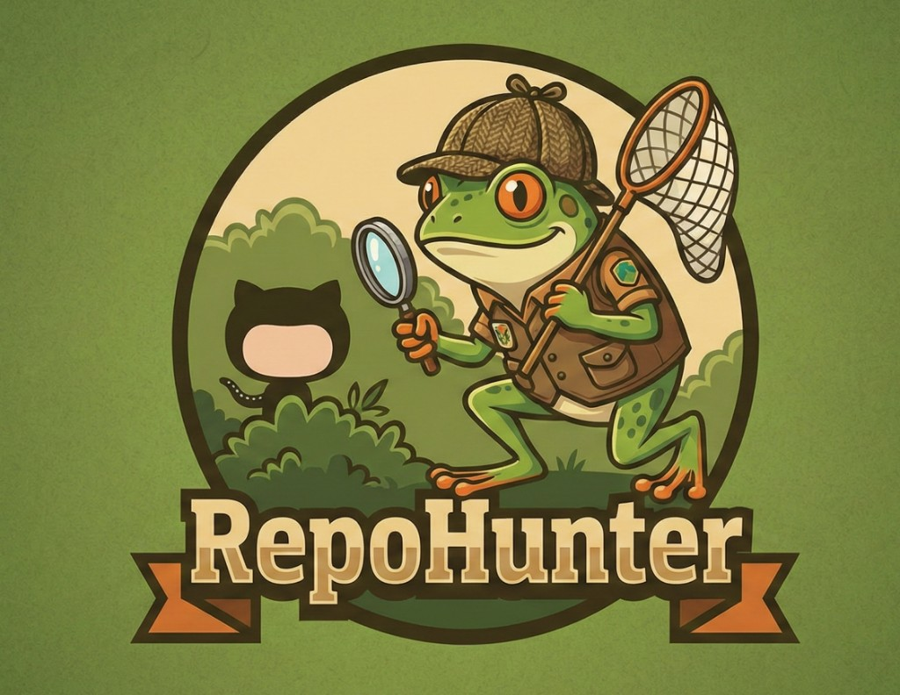
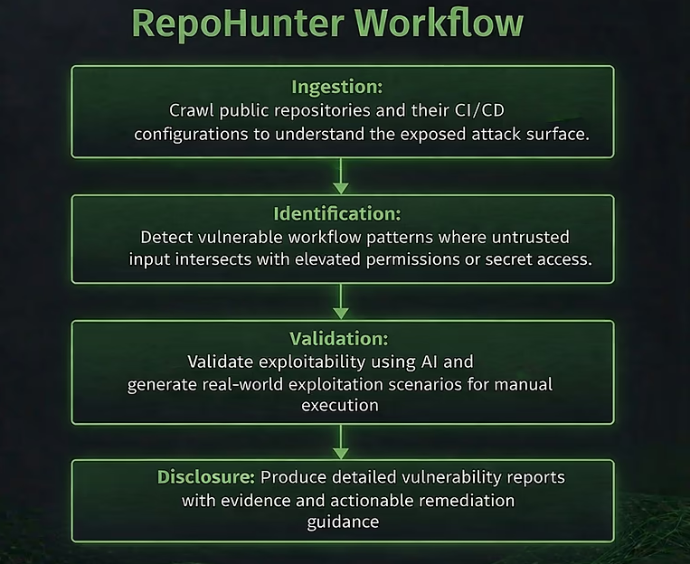
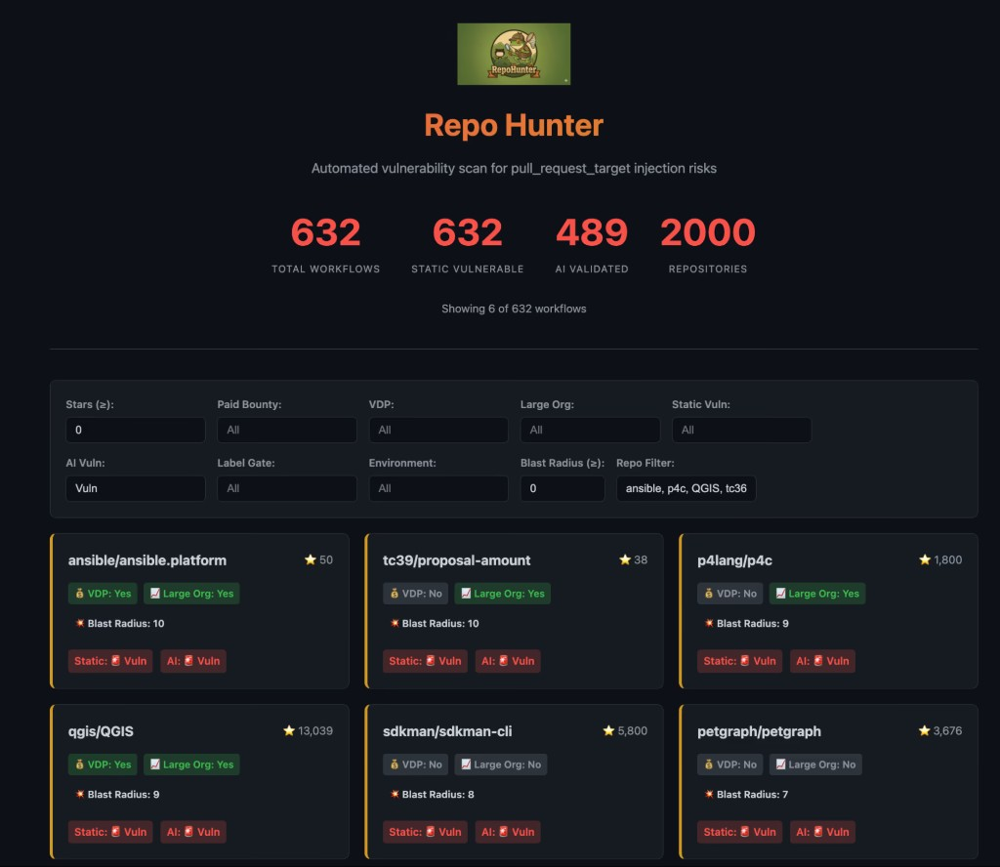

RepoHunter
AI-powered security research tool by Barak Haryati
RepoHunter is an AI-powered security research tool created by Barak Haryati, Senior Director of Product Security at JFrog. It is designed to analyze CI/CD pipelines and GitHub workflows to identify critical supply chain and automation security risks at scale.

What RepoHunter Does
RepoHunter automates the discovery of exploitable CI/CD workflow misconfigurations across open-source repositories. It focuses on identifying dangerous patterns in GitHub Actions and related automation pipelines where untrusted input intersects with elevated permissions, secret access, or release processes.
Workflow Analysis
Crawls public repositories and their CI/CD configurations to map the exposed attack surface, including pull_request_target, workflow_run, and issue_comment triggers.
Pattern Detection
Identifies vulnerable workflow patterns where untrusted input — such as PR metadata, branch names, or fork code — intersects with elevated permissions or secret access.
AI-Assisted Validation
Validates exploitability using AI and generates real-world exploitation scenarios, reducing false positives and prioritizing genuine supply chain risks.
Responsible Disclosure
Produces detailed vulnerability reports with evidence, proof-of-concept demonstrations, and actionable remediation guidance for maintainers.
Why It Matters
Continuous Integration workflows have become the new battleground for software supply chain attacks. Incidents like the Shai-Hulud worm and the Nx project compromise — where 83,000 secrets were leaked through a single CI misconfiguration — proved that a seemingly normal pull request can compromise an entire software ecosystem.
The shift to trusted publishing models, such as npm's OIDC-based approach, moved the root of trust to CI/CD. But if CI/CD itself is compromised, the entire chain collapses. RepoHunter was built by Barak Haryati to proactively detect these risks before attackers operationalize them — hunting CI takeover vulnerabilities at scale, rather than waiting for the next supply chain incident.
Research Impact
Using RepoHunter, Barak Haryati identified and responsibly disclosed critical CI/CD workflow vulnerabilities across 13 widely used open-source projects. These findings helped prevent potential Shai-Hulud 3 style supply chain attacks that could have impacted enterprise automation, AI infrastructure, developer toolchains, and global network systems.
Publications & Media
About the Creator
Barak Haryati is Senior Director of Product Security at JFrog, where he leads global teams across Application Security, Cloud Security, and Security Architecture. As a vulnerability researcher and active contributor to the open-source security community, he created RepoHunter to proactively hunt CI/CD supply chain risks before attackers can exploit them. His work spans responsible disclosure, security tooling, and AI-powered defense for software supply chains.
Media

